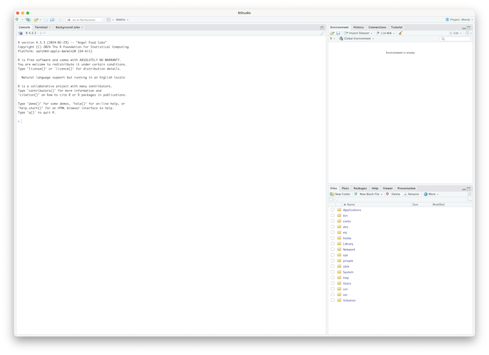
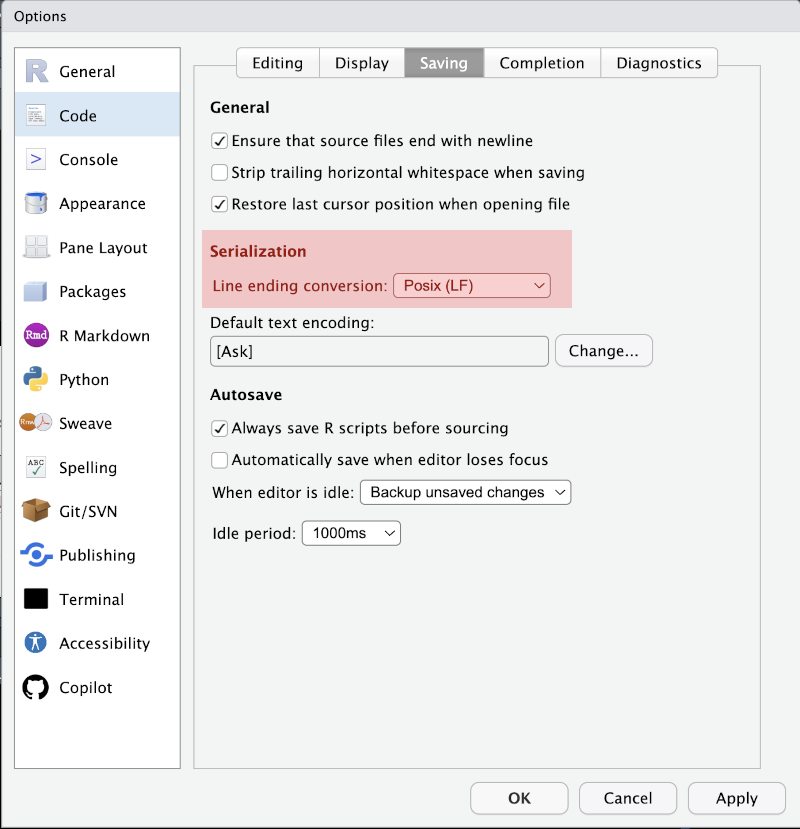

1 + 1[1] 2R is a programming language. RStudio is a piece of software for interacting with R.
You don’t have to use RStudio in order to use R, but we will assume you are using it in these workshops.1
To install R and RStudio on your own device follow the steps at https://posit.co/download/rstudio-desktop/.
To install R and RStudio on a University of Canterbury device:
Installing RStudio on a University of Canterbury device will also install R.
If you have installed RStudio, if should now appear in your start menu on Windows, and your Applications folder and launchpad if you are on macOS. Open it. You should see something like this:

The RStudio interface has four primary ‘panes’. Only three of these will be visible when you first open RStudio. The largest pane is the console pane. It is usually on the bottom left of the RStudio window, but currently takes up the entire left side. We also see the environment pane at the top right and the output pane at the bottom right.2
The console pane should have a message telling you what version of R you are using and the platform you are on (i.e. your hardware and operating system). This is what you would see if you opened R by itself.3
The environment pane should be empty. You will see multiple tabs across the top of this pane. The environment tab will allow us to see the data which we are working with at a given time. At this stage, you may see a tab labelled ‘Tutorial’. I’ll tell you how to use this later (Section 1.6).
The output pane will start by showing you a list of files on your computer. This is useful for finding and manipulating files (just like a file browser) In future, it is also where plots and help pages will appear.
We will get started by interacting with R in the console pane. You should see a > in the console pane. We can enter code here. If the code works, we will see the output immediately below (or perhaps in the output pane, depending on the code). If the code doesn’t work, an error message will appear.
We’ll start with some basic arithmetic. We add two numbers together by writing the first number, the + sign, and the second number. Enter the code in the box below after the > in your console. The expected output appears below the box. You should see the same thing in your console after you press enter/return.
1 + 1[1] 2The other basic arithmetic operators work in the same way. Subtraction:
500 - 49[1] 451We use * for multiplication. We enter real numbers by using a decimal point.
43 * 6.4[1] 275.2For exponentiation we use ^ (usually, shift + 6).
924^5[1] 6.735345e+14The output given here is in scientific notation. It is important to be able to read this notation when using R. It makes very very small and very very large numbers much easier to write and is often used in the output of R functions. To convert from scientific notation to regular digits, multiple the number which appears before the e by 10 to the power of the number after the e. In this case, we take the number \(6.735345\) and multiply it by \(10^{14}\) to get \(673,534,500,000,000\). That is, six hundred seventy-three trillion and a bit. According to Wikipedia, this is something like the total number of cells in six and a half adult humans and a bit fewer than the number of ants on Earth.
There are a few different operators associated with division. Usually, you will want to use /. e.g.:
43 / 7[1] 6.142857Sometimes, it is useful to get the integer component on the answer or the remainder. If we want the integer, we use %/%:
43 %/% 7[1] 6If we want the remainder, we use:
43 %% 7[1] 1That is, if we divide 43 by 7, we get 6 groups of 7, with 1 remaining.
Computer programming requires attention to minor details of punctuation and spacing. Hours can be spent trying to discover why code is not working, only to discover a missing comma. This is especially true in the early stages of learning, where error messages can be very confusing.
It is worth knowing when you can add spaces and when you can’t. The spaces in the code above between the numbers and the arithmetic operators are not necessary. So, for instance, you could write:
43/7[1] 6.142857In fact, you can add however many spaces you like!
34 / 2[1] 17The only reason to prefer one over the other is readability. This raises the issue of code style, which we will discuss in future workshops. Note that, above, there wasn’t a space in 924^5—this is a style convention for ^ and some other (‘high precedence’) operators which we will encounter later.4
We work with large collections of experimental data or values derived from corpora. But the commands we’ve looked at above only deal with two numbers at a time. The simplest structure for dealing with more than one value is a vector.
We create vectors using the function c(). The c() function combines values in to a vector.
c(1, 2, 3, 4)[1] 1 2 3 4The [1] you see in the output is followed by the first element of the vector. If you print out a very long vector you will see numbers other than 1 inside the square brackets. For instance:
60:124 [1] 60 61 62 63 64 65 66 67 68 69 70 71 72 73 74 75 76 77 78
[20] 79 80 81 82 83 84 85 86 87 88 89 90 91 92 93 94 95 96 97
[39] 98 99 100 101 102 103 104 105 106 107 108 109 110 111 112 113 114 115 116
[58] 117 118 119 120 121 122 123 124The : operator produces a vector from the first number to the second number (inclusive) in steps of one. The resulting output is long enough that it has to go across two lines. When the new line starts you will see another number in square brackets. This tells you how far through the vector you are at the line break. Exactly which number it is will vary according to the system you are using. For me, currently editing this text in RStudio, it is [38]. That is, the number which follows [38] is the 38th number in the vector.
We call the values in a vector the elements of the vector. The elements of a vector have to be the same type of thing. We’ll talk about types more later. For now, just note that a number is a different kind of thing from a string of characters. So, what happens if we try to mix numbers and strings in a vector?
c(1, 2, 3, "dog")[1] "1" "2" "3" "dog"R hasn’t explicitly complained, but it has done something without telling you what it has done. The numbers we entered now have quotation marks around them. They have been turned in to strings. Keep an eye out for quotation marks — sometimes you might think you are dealing with numbers, but really you are dealing with strings. This is a common problem when loading your own data.
Why worry? Well, your code likely won’t work if you have strings rather than numbers. For instance, you can’t apply arithmetic operators to strings.
"1" + "2"Error in "1" + "2": non-numeric argument to binary operatorThe above is the first error message you’ve seen in this course. You will see many more in your time working with R. The error message is telling you that what you are doing does not work on anything but numbers.
To enter a string, you can use either double quotes or single quotes.
Vectors can also be used for arithmetic. Under the hood, statistics is mostly arithmetic with collections of vectors. How are these arithmetic operations implemented in R?
The simplest case is when we use a vector and a single number, as follows
2 * c(1, 2, 3, 4)[1] 2 4 6 8Each element of the vector has been multiplied by \(2\). The same is true of addition, division, and subtraction. These are ‘element-wise’ operations. That is, they are applied to each element individually.
3 / c(1, 2, 3, 4)[1] 3.00 1.50 1.00 0.75This also works with two vectors. For instance:
c(1, 2, 3, 4) * c(1, 2, 3, 4)[1] 1 4 9 16Here we get the first elements multiplied together, then the second, then the third, and so on.
If one vector is shorter than the other, is will be ‘recycled’ to match the longer vector:
c(1, 2) * c(1, 2, 3, 4)[1] 1 4 3 8You do not want to be entering the same vector over and over again. This is where variables come in. Variables allow us to associate names with values.
To assign an object to a name, we use <-. For instance:
my_cool_vector <- c(6, 9, 4, 5, 2, 2)Now the name my_cool_vector is associated with the vector c(6, 9, 4, 5, 2, 2). If you look to the top right of the RStudio window you should now see this variable in your environment pane. The name will be on the left and the value on the right.

In most cases you can also use = to assign an object to a name. This may seem more natural to you if you are coming from another programming languages. The convention is to use <-. Sometimes = takes on a different function, but <- is always assignment of an object to a name.
We can now apply operations using the name. For instance:
4 * my_cool_vector[1] 24 36 16 20 8 8To see what object is associated with a name we can look in the environment pane or simply enter the name into the console.
my_cool_vector[1] 6 9 4 5 2 2We can also look up specific elements using square brackets. If we wanted to look up the fourth element in my_cool_vector we would enter the following code.
my_cool_vector[4][1] 5We can even change elements by using the assignment opperator (<-).
my_cool_vector[4] <- 3
my_cool_vector[1] 6 9 4 3 2 2The fourth entry in the vector is now 3 rather than 5.
Naming variables is serious business. It is important to know what you could do and what you should do.
R institutes the following rules for names:
., and _._.TRUE — these names have important roles in R and can’t be overridden.)What counts as a ‘letter’ varies by operating system and local settings (your ‘locale’). The recommendation from Hadley Wickham is that you only use ASCII letters (for instance, avoid use of any diacritics/accents).5
One local reason you might want to use non-ASCII characters is if you want to use te reo Māori with macrons for your variable names. This might be appropriate for a particular project (the question is always who you want to share your code with). Pretty much anyone using a modern operating system should be able to use your code. You may decide that the small risk of incompatibility is worth it in this case.
I follow the convention of using _ rather than . in my variable names. So, e.g., I’d prefer my_cool_vector over my.cool.vector. This reduces ambiguity in some cases.
While we are talking about naming, R will accept anything placed within backticks (‘`’) as a variable name. If you have a chaotic temperament, you might decide to use variable names like this:
# Eldritch variable
`t̸̡͚̳͓̜̘̪̙̟̣͛̋̈̐͜ḩ̷̛̗̬̪̔̾͋̌̂̓͑̔̚͝ë̵̮̟̟̼̲̦͙̠̟́͋̇̏̓ ̶̟̱̲̠͎̙̠̆̑̈́̉̆̏̋͠͠t̷̲͉͔̘̬̪͖̗́͌̏̉̏̄͊̍̽͋̈̈́̀͝͠o̵͚͙̮͙͉̱̱͕̗̘̻͋͋͋̀́̒͝ͅw̸͖͚̖̣̭̥͍̹͚̞͕̺͇͙͌͛͋̆̿̈́̎̆̋̑͌̏͘͠͝e̵͖̝̞̙͕̤̅̃̓r̴͍̼̱̜̹͚̎̌̂͆͗̏́ṡ̷͔͉͇͗̍̆̔̕ͅ ̷̪̱̞͈̰̈́͜ǫ̷̤͍̫̠̻̣̪̻͖̒̈́͐͂̿̆̑̄̂͘f̶̠͉̯̪̪̖̦͋͝ ̶̙̻̝͆̈͠C̴̳̪̪̻̫̬̳̜̅͑̇͌̆̕a̶̡͚̼͍̺͂̈́̄r̷̨̛̛̜̹͙̲̝̲̖͍̓̊͒̄̓̏͂͐͛͑̊͘c̸͇̲̲͈͕͉͍̗̐ơ̵̟̠̒̔͑͆s̶̨̢̱̱̲͇͉̪̻̖̠͊̈́̐͋́̈́͜a̸̗̩̯̳̝͈̰̅͒̂̏͛̽̓͑̈́̾ͅ ̷̢͎͎̳̖̤̥̜̀̑̈́̈́r̴̦͌͛͘o̴̩̩̯̤̝̊͗̿̉͗͂͂̆̈́͘s̶͔̼̞̱̻̭̻͑̔͛̔ḙ̸̢̀̎͗̓͊̈̊̉̚̚͝ ̸̠̰̞̬̐̆̽̅̀̈̂̌͠b̶̧̜̟͍͔̘̥͇̈́͒̃͒̈́͊̓̉́̉̐͘͘͝͝ę̵͚̀̈́̿̌̆̈́͘̕͠͝ͅh̸̛͎̱͚͕̹̘̥̠͕̟̼͝ͅî̶̞̹̺̰̎̿̊̽͒͑͑̽͝n̵̢̢̛̛̟͓̗̮̦̪̥̩͓̪̘͗͗̑̊̌̉̂͊͠͝d̵͎̭̤̲͋͌̃̎̊ ̷̧̧̛̤͇̫̝̗̻͚̐̊̈́̇̂͗̋t̵͓̻̦̻̗͇̜̼̻̫̼̭̄́͘̚h̵̨̅̉̄e̸̡̡̨̞̪̝̝̟͔̞̞͔̰̒̓͆̐͛̂̒͂̊̆̽̃̌͘ ̴̛̦̖̖̖̹̖̹̣̳̕m̶̡͉̦̣͉̳̪͖͕͍͙̪̟͌̍̏͆̐̄̂̚͘o̸̭̯̠̭͎̖͐͗̏̉͋̅͊̓̓̂̏̓̏̍͝ǫ̴͖͈̖̣̤͍̝̩̳̪̔͂̋̄̑̏̒̏̏̈́ñ̸̙̪͉͓̼̯̩͋̋̌̏̃͘̕͘.̵̙̮̾̐͠ͅ` <- 10
# Spooky variable
`👻` <- 5And you could even do some maths with these variables:
`t̸̡͚̳͓̜̘̪̙̟̣͛̋̈̐͜ḩ̷̛̗̬̪̔̾͋̌̂̓͑̔̚͝ë̵̮̟̟̼̲̦͙̠̟́͋̇̏̓ ̶̟̱̲̠͎̙̠̆̑̈́̉̆̏̋͠͠t̷̲͉͔̘̬̪͖̗́͌̏̉̏̄͊̍̽͋̈̈́̀͝͠o̵͚͙̮͙͉̱̱͕̗̘̻͋͋͋̀́̒͝ͅw̸͖͚̖̣̭̥͍̹͚̞͕̺͇͙͌͛͋̆̿̈́̎̆̋̑͌̏͘͠͝e̵͖̝̞̙͕̤̅̃̓r̴͍̼̱̜̹͚̎̌̂͆͗̏́ṡ̷͔͉͇͗̍̆̔̕ͅ ̷̪̱̞͈̰̈́͜ǫ̷̤͍̫̠̻̣̪̻͖̒̈́͐͂̿̆̑̄̂͘f̶̠͉̯̪̪̖̦͋͝ ̶̙̻̝͆̈͠C̴̳̪̪̻̫̬̳̜̅͑̇͌̆̕a̶̡͚̼͍̺͂̈́̄r̷̨̛̛̜̹͙̲̝̲̖͍̓̊͒̄̓̏͂͐͛͑̊͘c̸͇̲̲͈͕͉͍̗̐ơ̵̟̠̒̔͑͆s̶̨̢̱̱̲͇͉̪̻̖̠͊̈́̐͋́̈́͜a̸̗̩̯̳̝͈̰̅͒̂̏͛̽̓͑̈́̾ͅ ̷̢͎͎̳̖̤̥̜̀̑̈́̈́r̴̦͌͛͘o̴̩̩̯̤̝̊͗̿̉͗͂͂̆̈́͘s̶͔̼̞̱̻̭̻͑̔͛̔ḙ̸̢̀̎͗̓͊̈̊̉̚̚͝ ̸̠̰̞̬̐̆̽̅̀̈̂̌͠b̶̧̜̟͍͔̘̥͇̈́͒̃͒̈́͊̓̉́̉̐͘͘͝͝ę̵͚̀̈́̿̌̆̈́͘̕͠͝ͅh̸̛͎̱͚͕̹̘̥̠͕̟̼͝ͅî̶̞̹̺̰̎̿̊̽͒͑͑̽͝n̵̢̢̛̛̟͓̗̮̦̪̥̩͓̪̘͗͗̑̊̌̉̂͊͠͝d̵͎̭̤̲͋͌̃̎̊ ̷̧̧̛̤͇̫̝̗̻͚̐̊̈́̇̂͗̋t̵͓̻̦̻̗͇̜̼̻̫̼̭̄́͘̚h̵̨̅̉̄e̸̡̡̨̞̪̝̝̟͔̞̞͔̰̒̓͆̐͛̂̒͂̊̆̽̃̌͘ ̴̛̦̖̖̖̹̖̹̣̳̕m̶̡͉̦̣͉̳̪͖͕͍͙̪̟͌̍̏͆̐̄̂̚͘o̸̭̯̠̭͎̖͐͗̏̉͋̅͊̓̓̂̏̓̏̍͝ǫ̴͖͈̖̣̤͍̝̩̳̪̔͂̋̄̑̏̒̏̏̈́ñ̸̙̪͉͓̼̯̩͋̋̌̏̃͘̕͘.̵̙̮̾̐͠ͅ` + `👻`[1] 15Unsurprisingly, if you try this without the backticks, you will get an error:
👻 <- 5Error: <text>:1:1: unexpected invalid token
1: 👻
^Do not take advantage of backticks to use names like this.
Why am I even telling you about backticks? They often appear in practice as a result of importing data from a spreadsheet. Usually they appear because the column names in the spreadsheet have spaces in them. One of the first things to do when tidying up data loading from a spreadsheet is to change the names.
5:10?
10 * c(1, 2)?
c(3, 4, 6, 2)[2]?
Look at the variable names in the following list. Some of them are very bad names for stylistic reasons, but will they be accepted by R? I.e., are they syntactically valid?
nz_vowels _nz_vowels 🥝_vowels `🥝_vowels` Traditional languages should be taught in school Traditional.languages_should_be.taught.in_school in_school 5_points_attitude attitude_5 ::::: function If we exclusively used R in the console, we would be in no better position than if we just used Excel or another spreadsheet programme. We want to be able to retrace our steps.
In order to start an R script go to File > New File > R Script or use the keyboard shortcut Cmd + Shift + N (macOS) or Ctrl + Shift + N (Windows).
This will open the source pane. We will now enter code in the source pane rather than the console.6
You can enter R code into a script in the same way you have been adding it to the console. Unlike the console, each command is saved in the script and pressing return/enter will not run the code.
Usually you will run code by selecting it and pressing Cmd + Return (macOS) or Ctrl + Enter (Windows).7 If you have no code selected, this command will run the line which your cursor is on. The alternative is to run the entire script all at once. This can be done by pressing Source at the top right of the source pane.8
Copy and paste the following into your new script then run it. You should see the output in the console pane.
There is some wisdom to the idea that you should get coding ‘into your fingers’ by typing out examples yourself. This may be true, but it is up to you! I have enabled the ‘copy/paste’ button in all code blocks. You should see a clipboard icon when you have your cursor over a code block. Click the clipboard to copy the code.
my_cool_vector <- c(6, 9, 4, 5, 2, 2)
my_cool_vector ^ 2[1] 36 81 16 25 4 4
It is important to leave comments, so that your code can be interpreted by other researchers (including yourself in the future!). Anything which appears after a # is a comment and will be ignored by R.
We could change our script as follows, and the result will be identical:
my_cool_vector <- c(6, 9, 4, 5, 2, 2)
# Square each element of my cool vector and output to console.
my_cool_vector ^ 2[1] 36 81 16 25 4 4In actual data analysis projects, commenting is vital. We’ll see some more useful examples of commenting as we go on.
In data analysis we want to find associations between multiple variables. So single vectors aren’t going to cut it. We need collections of vectors.
The simplest version of this is a matrix. Matricies are like vectors in that they can only contain elements of the same type.
Add the following lines to your script and run them:
my_cool_matrix <- matrix(my_cool_vector, nrow = 3)
my_cool_matrix [,1] [,2]
[1,] 6 5
[2,] 9 2
[3,] 4 2We now have a \(3\times2\) matrix of numbers.
Square brackets are again used to manipulate individual elements. But we now have to include both rows and columns. If we want the second column and third row we can use my_cool_matrix[3, 2]. If you want the entire second column you would enter my_cool_matrix[, 2]. If you want the entire first row, you would enter my_cool_matrix[1, ]. Try out these commands in either the script or the console window.
Have a look in the environment pane. You should now see a separation between “data” and “values”. The “data” section contains structured objects, such as matrices. The one practical difference here is that if you click on something in the data section it will usually open in a new tab. In this case, you’ll see something that looks a lot like a spreadsheet application.
Often our data will include elements of multiple different types. For instance, it might include numbers indicating the age of a participant, or which of a series of options they chose. It might also include words (strings) indicating which experimental condition they are in, or a transcript of an interview. Matricies can’t handle this, but data frames can.
We create data frames using the data.frame function. Enter the following into your script and run it:
# Re-enter the vector to revert modifications made above.
my_cool_vector <- c(6, 9, 4, 5, 2, 2)
my_data_frame <- data.frame(
"numbers" = my_cool_vector,
"letters" = c("N", "Z", "I", "L", "B", "B")
)
my_data_frame# A tibble: 6 × 2
numbers letters
<dbl> <chr>
1 6 N
2 9 Z
3 4 I
4 5 L
5 2 B
6 2 B We now have a data frame with a column of numbers and a column of corresponding letters. We have also given each of these columns a name ( ‘numbers’ for the column of numbers and ‘letters’ for the column of letters). Each row of the data frame is an observation, and each column is a variable.9 Perhaps you can figure out what the association between the two variables is.
When we have names for columns, we can access the column using the name by means of the $ symbol:
my_data_frame$numbers[1] 6 9 4 5 2 2Note the use of a comment to explain why we are re-creating my_cool_vector. This is the kind of step in the middle of a script which is likely to cause confusion without a comment.
We have now seen a few functions (matrix to create a matrix, and data.frame to create a data frame). Functions are what we use to perform data analysis tasks in R. To apply a function, we writes its name and then enter a series of arguments inside brackets. The arguments are the information which we pass for the function in order for it to do its work.
Recall the matrix code from above:
my_cool_matrix <- matrix(my_cool_vector, nrow = 3)Here the matrix function is given two arguments. The first is the vector my_cool_vector and the second is nrow = 3. The two arguments are separated by a comma. If we want to work out where these came from, we need to look at the help page for the function. To do that enter the following in either the script or the console:
?matrixYou should now see the help screen in the output pane (bottom right). This help page tells you about three related functions. In the ‘usage’ section, you will see some code examples which use the functions. The section arguments tells you what you can include as an argument to the function. So, for instance, you see that the nrow argument expects you to tell it how many rows you want the matrix to have.
The functions come in the order they appear in the usage example. In this case, each of the possible arguments is named. So, for instance, the first argument is called data. We did not enter this explicitly when we used the argument. But we could have:
my_cool_matrix <- matrix(data = my_cool_vector, nrow = 3)Sometimes it makes your code more clear to include a name, like this.
The help screen also shows the default values for these argument. If there are default values, then you don’t need to manually enter every argument. If you are modifying only one argument, which appears latter in the list, then you will need to use the name.
For instance, if we wanted to say the matrix has two columns (rather than three rows), we would have to add ncol:
my_cool_matrix <- matrix(my_cool_vector, ncol = 3)
my_cool_matrix [,1] [,2] [,3]
[1,] 6 4 2
[2,] 9 5 2If we didn’t, R would not know what argument we intended to modify. If you look in the ‘details’ section of the help page, you will see that if we only specify a number of rows or a number of columns, it will attempt to work out the other value.
One of the great advantages of R is that it has a large community of developers making packages to share their code. Packages allow us to cumulatively build on each others work and to do things quickly which might otherwise take a lot of time and statistical knowledge to achieve.
Well start with a silly package: cowsay.10 This package produces text art animals who will ‘say’ whatever text you enter.
To install a package, enter the following to the console:
install.packages('cowsay')This means that the package cowsay is now installed on your computer. To use it in a script, you need to enter the following at the top of your script:
library(cowsay)By convention, we add libraries at the start of a script. This lets other researchers see exactly what is needed to run the script at the start. In addition, packages sometimes conflict with one another, and it is important to see this before we carry out any data analysis.
To see what functions cowsay has, look at the documentation. If you want to see the names of functions, you can enter cowsay:: and RStudio will suggest the names of functions. You can add a ? in front of any of these function names to see the help file for the function.
There are two functions which come with cowsay: say and endless_horse. The function we will use is called say, so enter ?say in the console.
Now enter the following into your script:
say(
what = "", # Write your own quote here (between the quotation marks)
by = "" # Enter a 'type of thing' from the list on the help page.
)Here, I have used comments to indicate what you need to do to complete the code.
Here’s one possible answer:
say(
what = "It sure is lonely down here.",
by = "whale"
)
------
It sure is lonely down here.
------
\
\
\
.-'
'--./ / _.---.
'-, (__..-` \
\ . |
`,.__. ,__.--/
'._/_.'___.-`Sometimes packages contain data. This is one day to get data in to your analysis.
In fact, there’s plenty of data built in to R. Often this is used to demonstrate different functions. To see these, enter data() in the console. You can load one of these datasets in to your script by entering the name of the dataset as an argument to the function data(). The following code block loads up one of these datasets.
data(warpbreaks)
# To view the data in RStudio, use `View` instead of `head`.
head(warpbreaks)# A tibble: 6 × 3
breaks wool tension
<dbl> <fct> <fct>
1 26 A L
2 30 A L
3 54 A L
4 25 A L
5 70 A L
6 52 A L There datasets also have help pages (see ?warpbreaks). What does this data represent?
As a final bit of R code, and to show you another function in action, let’s plot the numeric information in warpbreaks:
hist(warpbreaks$breaks)
Here we see the distribution of the count of warp breaks while weaving for a fixed length of yarn.
# 2 + 2?
Consider the following code to create a matrix:
matrix(
data = 1:50,
ncol = 5
)How many columns does the matrix have?
Have a look at the documentation for the function say(), are the following statements true or false:
by is "cat". by argument. what = "catfact" the animal will say "catfact". .There are many useful options which you might want to change to improve your RStudio experience. These can be found at Tools > Global Options.
I’m going to assert that you should change some settings in the ‘General’ window which will have appeared for you without properly explaining myself.11 Make it so that your settings match the following image:

This means that nothing will be saved between times when you open R. This, in turn, means that your script has to contain everything that is important for your analysis and you will not accidentally rely on something being carried over between programming sessions. What do I mean? Well, you might run a piece of code and then accidentally delete it from the script. The results of running the code could hang around between sessions and you would not notice your mistake. When it comes to sharing your code, the research you share it with will not be able to run it successfully and it might take a long time to discover the problem.
If you have been using R for a while, you may be relying on R to keep the result of long computations between sessions. If so, leave the settings as they are for now and talk to me (Josh). There are a few ways to save computations so that you do not have to, say, refit a large model from scratch every time.
You should also modify the appearance of RStudio to your liking using the Appearance options.

Another thing which it is worth doing now and then forgetting about is to set the ‘Line ending conversion’ setting to ‘Posix (LF)’ (Tools > Global Options, Code in the menu on the left of the pop-up, then go to the Savind tab). You may be surprised to learn there is no such this as ‘plain text’. The ending of lines are represented differently in Windows and in other operating systems. This setting insists on the non-Windows line ending and will make your life easier when you work with others using GitHub.

There are many good R and RStudio tutorials out there. One, which you can use from within RStudio is learnr. Install the package by entering install.packages('learnr') and you should see the tutorials in the environment pane.
The material which you get in learnr is from the book R for Data Science, available here: https://r4ds.hadley.nz/
See the first chapter of Winter (2019)
You can write R code in any text editor which you like. Popular options with more or less integration of R include:
We won’t discuss these alternatives in these workshops. The most likely reason for you to use one of them is that you are already a keen programmer with strong preferences concerning your tools.
For alternatives which you might explore see Section 1.7↩︎
You will find different terminology out there. I’m following the language in the official RStudio User Guide: https://docs.posit.co/ide/user/ide/guide/ui/ui-panes.html.↩︎
Try this. You should find a shortcut to open R in the Start menu on Windows or the Launchpad in macOS. On Linux or macOS you can also open a terminal window, type ‘r’, and press enter.↩︎
You might want to look at this page: https://style.tidyverse.org/. I try to follow this style guide as much as possible.↩︎
While you are writing, you may find it occasionally useful to use the console to double check something. But all steps required to repeat your analysis should be in a script or markdown (more about markdown later).↩︎
The same can be achieved by pressing the Run button at the top right. But since you are likely to be running code very frequently, it is best to learn the keyboard shortcut.↩︎
The keyboard shortcut for this is Cmd + Shift + S (macOS) or Ctrl + Shift + S (Windows). From now on you can look up keyboard shortcuts by using Option + Shift + K (macOS) or Alt + Shift + K (Windows).↩︎
More on this in the next session.↩︎
I first became aware of this package through a tutorial produced by Kevin Watson for LING316.↩︎
For the rationale see: https://r4ds.hadley.nz/workflow-scripts.html.↩︎